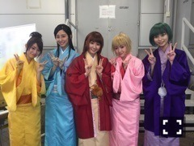

| 2016/05 22 Sun | じょしらく千秋楽！チームく最高。(´>∀<｀)ゝ |
ちはるーむへようこそ(﹡ˆ ˆ﹡)
昨日の世界ふしぎ発見が、
イタリアやエジプトに関しての回で、
ものすごく楽しかった。
イタリア、行きたい。
ヨーロッパ、行きたい。
エジプト、行きたい。
ピラミッド、見たい。
ミイラ、見たい。
博物館、行きたい。
くぅぅぅ
より一層ミステリーハンターになりたくなりました。
いや、絶対なってみせる！！
本日5/22でじょしらく弐〜時かけそば〜が無事終演いたしました！！
チーム「く」は、昼公演で怪我なく楽しく千秋楽を終えることができました。
応援してくれた皆さん、
観に来てくださった皆さん、
ありがとうございました！！！
とても楽しかったし、もっと公演がしたかった。演技する事は楽しかったけどやっぱり難しい。でもその難しさがより一層成長したいと思わせる。まだまだ頑張れると奮い立たせてくれる。
演技がもっともっとしたい。
チーム「く」はみんなマイペースで、のんびりで、ゆるくて、波長が一緒で、とってもやりやすかった！！
このメンバーで良かった、と心から思います。
それくらい素敵なチームでした\( ˆoˆ )/
そしてそして川尻監督を含め、
じょしらくスタッフの皆さん。
皆さんのおかげで最後まで無事、楽しんで公演することができました。
本当にありがとうございました。
またご一緒したいですm(_ _)m♪
いや〜〜〜
終わってしまったけど。
終わった感じがしないよう。
また明日からも引き続きAiiAシアターに行って公演してそう。笑
パッサ〜〜ってしてそう。
寂しいなあ。
もうあの台詞を言うこともないんだね。
あの場で、この5人で演技する事もないんだね。
名残惜しいなあ。
まだまだ続けたいなあ。
それくらい楽しい時間でした。
幸せな時間をありがとう。
じょしらく、やっぱり挑戦して良かった！！
学校やアンダラもあってたくさん大変なこともあったけど、大変だった事よりも楽しかった思い出でいっぱいだよ！！
じょしらく、最高！！

大好きチーム「く」。
台詞合わせ(という名の鍋パ)がとても楽しかったから、今度は打ち上げしようね♡って決めたんだ！！！
みんなありがとう(﹡ˆ ˆ﹡)
そしてありがとう、暗落亭苦来ちゃん。
暗い役ながらも、自分の世界に入り込んでしまうクレイジーな部分が大好きです。
苦来ちゃん役が出来てよかった♡
じょしらくが終わったら、
次はアルバム発売、46時間テレビ、15th制作、真夏の全国ツアーの準備だ！！
休む間もなく毎日が過ぎていく(｡･o･｡)ﾉ
忙しいって有難い。

そんな私は、学校での学食の時間が至福なひとときだったりする。
学食とか、普通に食べるよ！！
この日は初めての「明大カレー」
美味しかった( ◦˙ ˙◦ )
オススメは油淋鶏定食だったりする。

カラオケ行きたいな〜
歌いたいな〜
46時間テレビのカラオケ対決...♡
楽しみ。ぷぷ
斎藤ちはる
コメント(237)
2016/05/22 23:48